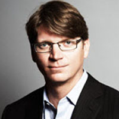

Stephen Henson

Stephen Henson is a reserved, reclusive 46-year-old Brit with a Ph.D. in graph theory. He is also almost single-handedly responsible for the security of 17 million webservers.
Read more >
Mark Zuckerberg

Mark Zuckerberg is an American computer programmer and Internet entrepreneur. He is best known as the founder of Facebook.
Read more >
Niklas Zennström

Niklas Zennström was born in Jarfalla, Sweden. He is best known for creating Skype and Kazaa.
Read more >
Sergey Brin

Sergey Brin, is a Russian American computer scientist and Internet entrepreneur who, together with Larry Page, co-founded Google.
Read more >